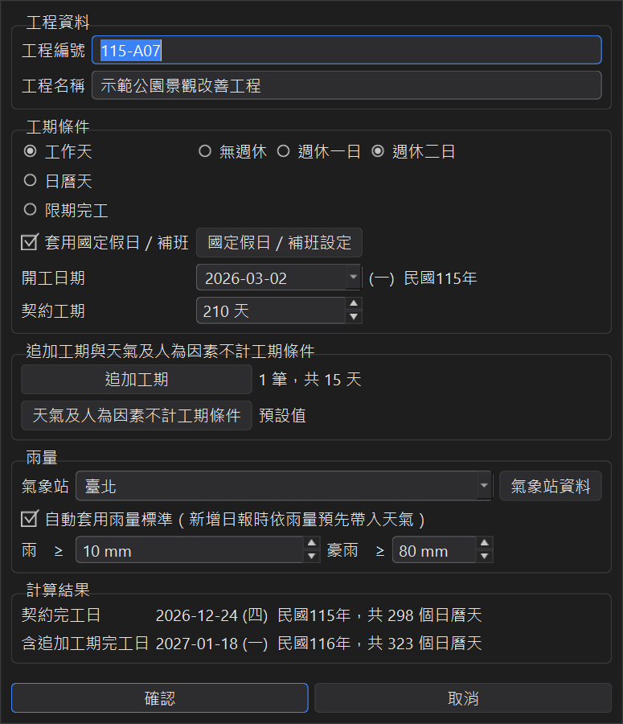
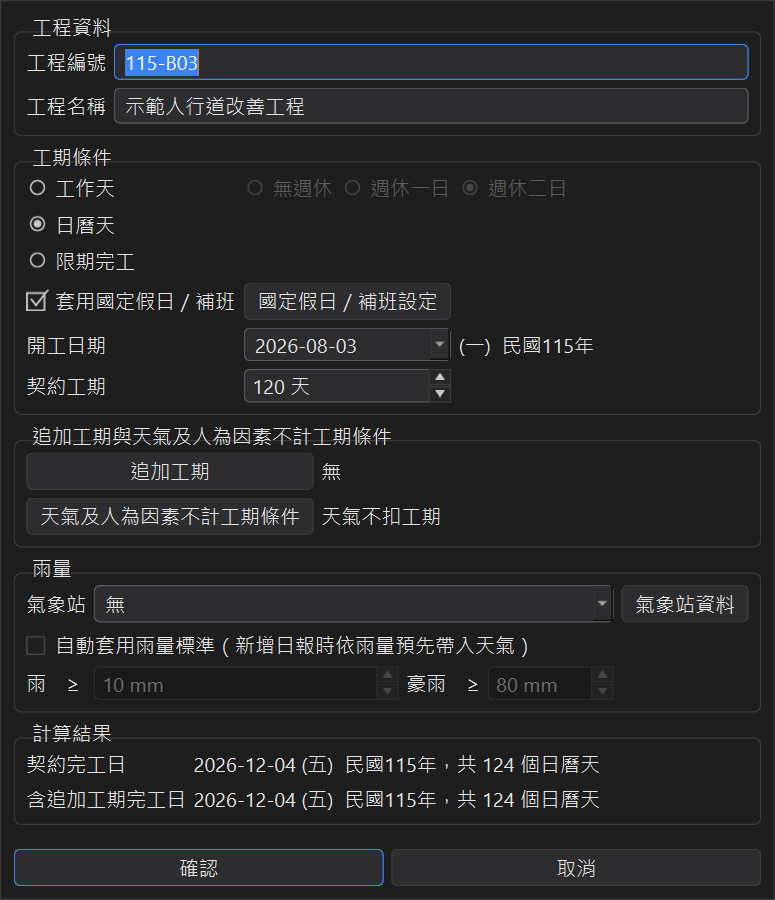
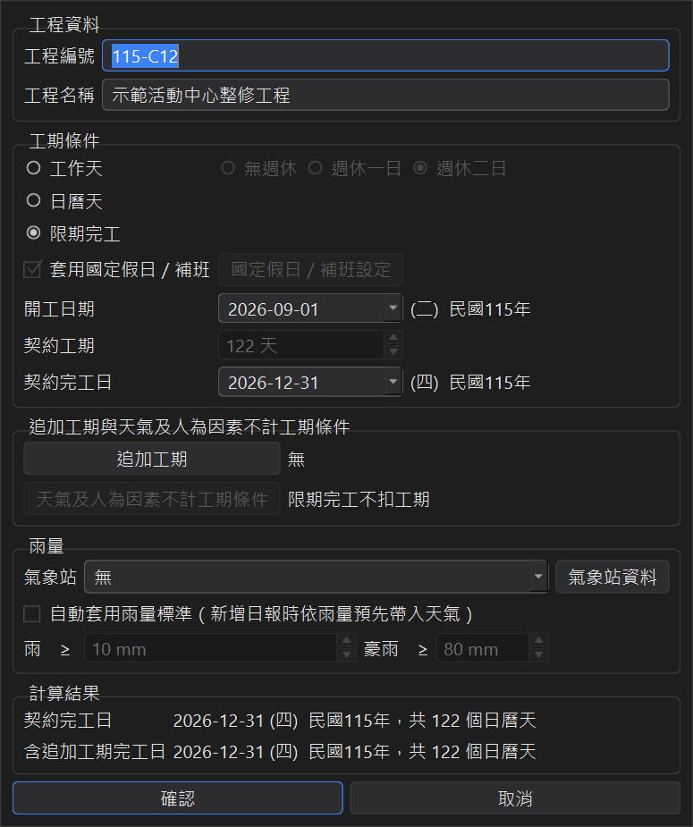
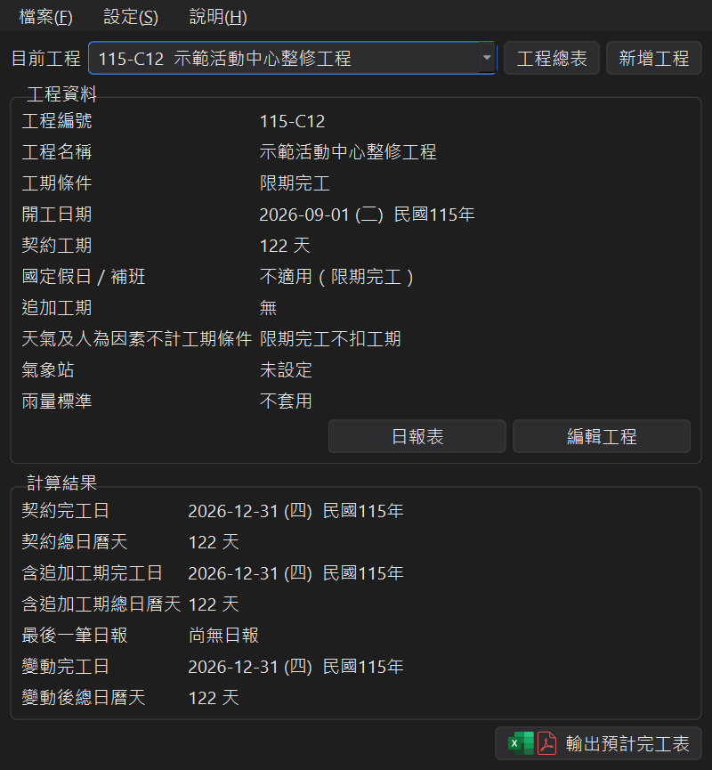
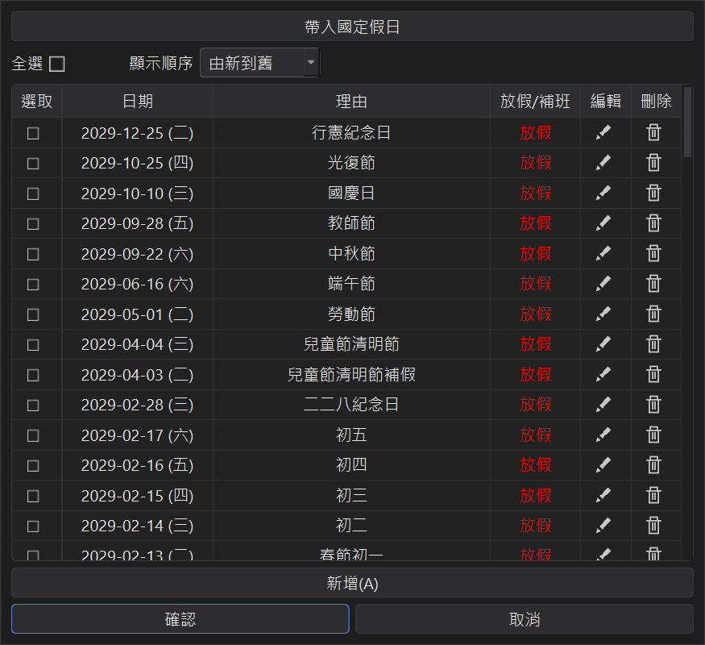

工期條件與國定假日
契約上的工期計算方式不同，完工日就會差很多。在編輯工程裡選好工期條件、開工日期與契約工期， 下方的計算結果會即時顯示契約完工日與含追加工期完工日。
1、三種工期條件
| 工期條件 | 哪些日子計入工期 | 天候、人為因素 |
|---|---|---|
| 工作天（無週休） | 每天都是工作日；國定假日不計（有套用假日時） | 依不計工期條件扣除 |
| 工作天（週休一日） | 星期日不計；國定假日不計、補班日照計 | 依不計工期條件扣除 |
| 工作天（週休二日） | 星期六、日不計；國定假日不計、補班日照計 | 依不計工期條件扣除 |
| 日曆天 | 星期六、日也計入；國定假日不計（有套用假日時） | 天氣照計；人為因素依條件扣除 |
| 限期完工 | 開工日到契約完工日每一天都計入 | 都不扣工期 |
2、工作天
選工作天後，再選無週休、週休一日或週休二日。輸入契約工期（工作天數）， 程式會跳過不計入工期的日子，算出契約完工日。

3、日曆天
日曆天是包括星期六、日在內每天都計入工期。依常見的工期核算規定，日曆天包括雨天在內都計入工期， 所以切換到日曆天時，程式會自動把天氣的不計工期條件全部設為「照計工期」； 停電等人為因素維持原本的設定。

切回工作天時，會還原切換前的天氣條件。如果契約另有規定，仍可在天氣及人為因素不計工期條件裡自行調整， 請見追加工期與不計工期條件。
4、限期完工
契約直接訂好完工日期的工程，選限期完工，再輸入契約完工日， 契約工期會自動推算成開工日到契約完工日的日曆天數（含頭尾兩天）。

限期完工的規則：
● 每一天都計入工期，國定假日、天候、人為因素、停工都不扣工期，所以國定假日與不計工期條件的設定會停用。
● 有核定的追加工期時，以日曆天加在後面。
主視窗會顯示「國定假日／補班：不適用（限期完工）」與「限期完工不扣工期」：

5、國定假日與補班日
勾選套用國定假日／補班時，放假日不計入工期、補班日照算；取消勾選時假日資料仍會保留，只是不參與計算。 按國定假日／補班設定可以檢視與修改這個工程的假日：

● 帶入國定假日：連網下載最新的國定假日與補班日。如果某一天你已經自己改過（例如改成補班），會先詢問再覆蓋。 連不上網路時改用上次下載的資料。
● 新增：加入自訂的假日或補班日，例如地方政府的停班停課日。
● 每一列可以編輯或刪除；勾選多列後可一次刪除。
新增工程時會自動帶入程式上次下載的國定假日（程式啟動時會在背景更新），不需要另外操作。